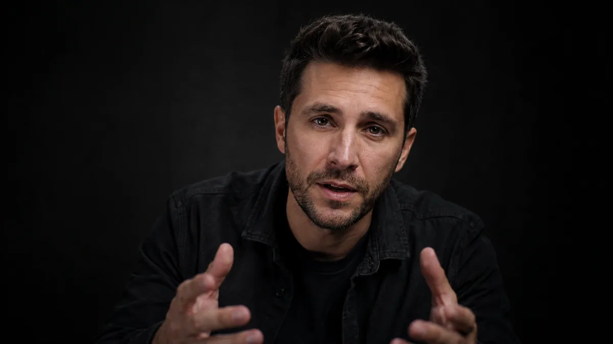
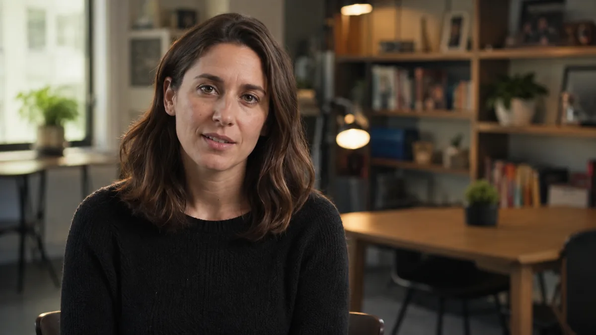

Seven formats. Each one starts from what a student actually watches, not what we think they should.
Show someone a job title. Ask them: real or made up. Cut to the person who actually does it for twelve seconds. Done.
Primary: Reels / TikTok
Vertical, 45 to 90 seconds. Two per week. The question earns organic reach because it is genuinely interesting and the answers are often funny. No paid campaign competes with that.
Secondary: YouTube Shorts
Horizontal cut. Searchable. Builds a catalogue that compounds in value over time.
Try the format
Shark Tagging Specialist
Real job or made up?
Every job title here is already on the Kindred platform. The person who watches this and thinks "wait, that's real?" ends up on the site.
All eight of those are real. The game works because people are genuinely surprised.
A student and a professional, twenty years apart, in the same career. The student asks. The professional answers. Nobody resolves anything.
A student who wants to be a nurse + a nurse of 15 years
She says: the hardest part is the waiting room conversation after the surgery. Not the surgery itself. She did not expect to say that out loud.
A student who wants to code + a senior engineer who moved into management
He says: I haven't written code in four years. The student is quiet for two seconds. That silence is the scene.
A student who wants to be a lawyer + a lawyer who left law at 40
The conversation no one in a guidance office ever initiates.
Distribution: YouTube primary, classroom playlist. One episode per month. 8 to 12 minutes.
The tension isn't the conflict. It's watching someone realize the plan was built on an assumption nobody corrected at 16.
Visual language
Same framing for both subjects. Student's side warmer. Professional's slightly cooler. The composition makes the generational distance visible without announcing it. No narrator. The camera trusts what it sees.
One person. One true thing about their career that does not appear in a job description, a career quiz, or a counselor's office. Not a complaint. A fact.
A data scientist
Nobody told him 80% of the job is cleaning spreadsheets. The other 20% is what people imagine the whole job is.
A marine biologist
Nobody told her she would spend more time writing grant applications than time in the water. The ocean is the reason. The grant is the job.
Sample episode — opening 60 seconds
Episode: The Marine Biologist
INT. UNIVERSITY OFFICE — MORNING
She is at her desk. The wall behind her has one photograph: somewhere cold, underwater, a shape in the distance. She is correcting a document. This is what we see first. Not her face.
She looks up. Holds for a beat.
"Nobody told me about the grants."
She pauses. Goes back to the document for three seconds. Then:
"I thought I was going to be in the ocean. I am in the ocean for maybe eight weeks a year. The rest of the year I am writing proposals about being in the ocean."
End on black. One card: what she does / what she earns / one sentence she wishes she had read at 16. Runtime: 5 to 7 min. Bi-weekly.
Planned: Journalist. Ended up: Content strategist at a tech company.
The skills transferred. The title changed. The salary tripled. She did not know that job existed when she declared her major.
Distribution: Kindred site, email newsletter, YouTube. One episode bi-weekly. Serves donor and student audiences at the same time, for different reasons.
The specific feeling of the first day in a career you chose on purpose. Shot in real workplaces on real first days. The person does not speak to camera. They do the work.
Casting matters a lot here — it only works if the person is actually doing something real in a real place on a real first day. No narrator. The audience fills in the emotion.
Sample episode: Marisol, 24, civil engineer
First day at an infrastructure firm in Compton. Parking lot to desk to first site walk. She does not look at the camera. We see her handwriting in a notebook. We see the moment she realizes she belongs somewhere. The end card: Civil Engineer. $72,000 starting salary. Cal State Long Beach via Compton Community College. She decided at 16 after a career quiz told her to look at structural design.
Runtime
3-5 min
Cadence
4 per year
Distribution: YouTube primary. Donor materials as evidence of student outcomes. District partnership presentations. Four per year. 3 to 5 minutes each.
People who are thriving in careers they did not plan for. Not pivot content. Not inspirational. Just: what did you think you were going to do, and what do you actually do.
Still figuring out the right casting approach here. It goes wrong fast if it reads as inspirational pivot content. The ones that work are the ones where the person is genuinely not sure how to describe what happened to them.
Planned: Pre-med. Ended up: UX researcher at a hospital.
She dropped organic chemistry sophomore year. She found a job that still lets her make healthcare better. She makes more than she would have as a GP.
Planned: Architect. Ended up: Construction project manager.
He loved the buildings. Hated the drafting software. Turns out there is an entire job that is just running the build itself. He found it by accident at 24.
One episode per month. 6 to 10 minutes. The end card always lists: original plan, current title, current salary, how they got from one to the other.
One episode per month. 6 to 10 minutes. End card always lists: original plan, current title, current salary, how they got from one to the other.
The taboo is the format. The transparency is the value.
Sample episodes
Environmental Engineer
Started at $52k · Now 6 years in
$94k
Forensic Accountant
Started at $48k · Now 4 years in
$82k
Occupational Therapist
Started at $60k · Now 8 years in
$89k
Technical Writer at a SaaS Company
Started at $55k · Now 3 years in
$91k

The taboo is the format.
A student who doesn't know what a job pays can't evaluate whether to pursue it. Two per week. 60 seconds. Shot on a phone with a clip-on mic and a ring light.
At the end of every career fair, mentorship session, and classroom visit, there is a question the student wanted to ask but did not. This series asks it.
"Did you ever regret it?"
Not asked of a generic professional. Asked of a specific person, in a specific career, twelve years in. The answer is almost always more complicated than yes or no.
"How much debt did it take to get here?"
The number. The actual number. Not a range from a brochure.
"What would you tell yourself not to do?"
Not the graduation speech version. The real one. The internship that wasted a summer, the grad program that could have been skipped, the mentor who pointed the wrong direction.

Where the questions come from
Students submit them through the platform, through school partners, through comments on existing content. The series runs on infrastructure that already exists. This probably needs the right teacher to shepherd it at the school level.
Distribution: Site and YouTube primary. One episode per week. 4 to 6 minutes. Pairs naturally with the platform's career pages as supplemental content.